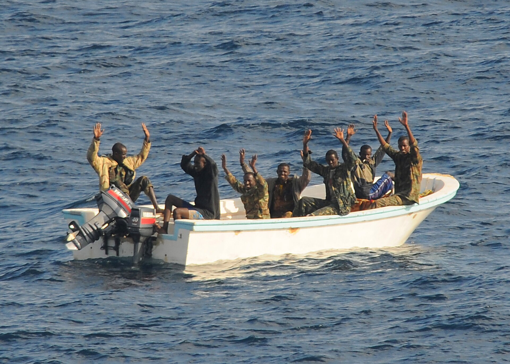

Добро пожаловать в мир сомалийских пиратов!
Сомалийские пираты — одно из наиболее обсуждаемых явлений современного мореплавания. Эта проблема затрагивает международную торговлю, безопасность и политику, оказывая влияние на экономику многих стран. Пиратство в Сомали берет свое начало в 1990-х годах, когда политическая нестабильность и экономический кризис оставили страну в хаосе. В условиях отсутствия законной власти местные вооруженные группы, включая бывших рыболовов и членов ополчений, стали захватывать иностранные суда в надежде на получение выкупа. В результате водные пути Аденского залива и западной части Индийского океана стали одними из самых опасных маршрутов для судовладельцев и экипажей.
Ситуация стала особенно сложной в 2008–2011 годах, когда сомалийские пираты организовали многочисленные нападения, часто захватывая суда вместе с экипажами, удерживая заложников до получения крупного выкупа. Это нанесло серьезный удар по международной торговле и привело к росту затрат на страхование и безопасность для судоходных компаний. Современное сомалийское пиратство стало моделью организованного криминального бизнеса, при котором захватчики используют передовые технологии и развивают сложные сети для ведения операций. Угроза пиратства заставила международное сообщество принять меры, включая создание военных патрулей и организацию операций по освобождению захваченных судов.
Несмотря на все усилия по борьбе с пиратством, проблема остается актуальной, поскольку корни пиратства кроются в отсутствии стабильной политической системы и экономической поддержки в регионе.
